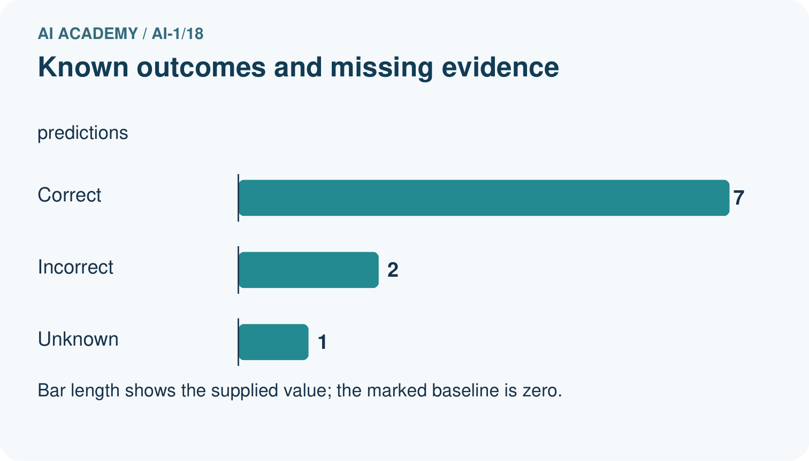
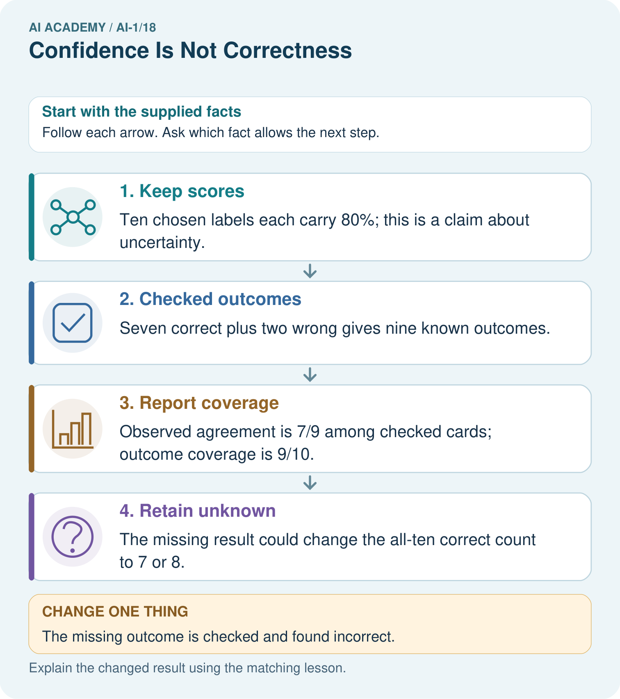

AI Academy · Level 1 · Grade 6 · Week 18 · Teacher guide
Confidence Is Not Correctness
Learn to understand, design, build, test and explain AI systems responsibly.
Project: Helpful Classroom Sorter
Teacher guide · 1 of 7
Confidence Is Not Correctness
Teach the learning cycle
Primary target: Distinguish a confidence claim from evidence that a prediction was correct
| Session | Sequence and minutes | Resources |
|---|---|---|
| Session 1 · Understand · 45 min | 0–7: recall and prerequisite; 7–15: inspect the concrete case and predict; 15–30: teacher models the worked trace; 30–40: learners explain a step using the text and visual; 40–45: check the core idea. | Sections 1–6; record the brief recall in the workbook. |
| Session 2 · Practise · 45 min | 0–5: retrieve the procedure; 5–15: W2 completion practice; 15–23: explain and check with a partner; 23–30: each learner answers the misconception check; 30–40: targeted reteaching or a harder variation; 40–45: prepare the investigation. | Sections 7–10; use the matching workbook W2 and misconception check. |
| Session 3 · Investigate and transfer · 45 min | 0–5: retrieve the decision rule; 5–20: investigate or trace; 20–30: start the independent case; 30–38: connect the project; 38–43: act on feedback; 43–45: plan the return check. | Sections 9 and 11–14. Give extra time to finish the full task set; use Section 15 when the week includes a coding lab. |
This is a starting allocation of 135 minutes, not a validated duration. Preserve all named topics. Schedule extra time for connected examples, the full investigation, independent cases and project building. Repeated copies of a case share one recorded attempt; they are not new evidence.
Retrieval answer guidance
Prediction Is Not Fact
Without opening the old lesson, explain one key idea from Prediction Is Not Fact. Give an example and a mistake that the idea helps you avoid.
Look for: Separate a recorded prediction from the observation used to check it
Reference example, not the only acceptable wording: Input height 6 cm; prediction far because 6 is at least 6; observed distance 3 units; observed category near because 3 is below 4; mismatch. Height is available to the model before the trial, while travel distance is measured afterward to check its prediction.
Save New Examples for Testing
Without opening the old lesson, explain one key idea from Save New Examples for Testing. Give an example and a mistake that the idea helps you avoid.
Look for: Separate examples used to choose a model from examples reserved for its final evaluation
Reference example, not the only acceptable wording: Comparing candidates is development. Scoring a frozen model on previously reserved examples is evaluation, provided they did not influence its development. Changing a threshold after reading the test score uses that test information for development of the revision; the same set is no longer independent of that revision.
Debug the Cause
Without opening the old lesson, explain one key idea from Debug the Cause. Give an example and a mistake that the idea helps you avoid.
Look for: Compare expected and observed traces to locate the first difference
Reference example, not the only acceptable wording: Expected trace: 3, 5, 10, 9. First difference is the doubling checkpoint: 10 expected versus 8 observed. The later 8 minus 1 equals 7, so the observed subtraction is consistent with its input. Investigate the earlier step before claiming another fault.
Use the student module and workbook section with this exact week title. The worked case, independent question and answers below form one aligned lesson sequence.
What the learner must demonstrate
A helper says 'definitely correct' on four answers; only two match the answer key. A cautious helper gives the same four answers. Which is more accurate? What additional evidence would you need to compare confidence quality?
Concept to explain
A system can be very confident and still be wrong.
| Term | Meaning |
|---|---|
| confidence | strength assigned to an output by a system |
| correctness | agreement with verified outcome |
| calibration | how well confidence matches observed accuracy |
| confident error | wrong result with strong stated confidence |
Prepare the class
Use the supplied scenario, student illustrations and blank paper. For numeric work, offer counters or a calculator after learners show the setup. Fictional records are supplied; personal data and paid accounts are unnecessary.
Allow 80 minutes: recall 8; explanation 12; worked demonstration 15; guided practice 20; independent assessment 15; project and reflection 10. Extend the lab into a second session when needed.
Preparation for the connected explanation
Keep confidence, numerical scores and correctness separate. Calibration is introduced as a group comparison, without formal estimation. Small exact matches do not prove calibration. Concept reference: scikit-learn probability calibration documentation at https://scikit-learn.org/1.8/modules/calibration.html. All classroom examples here are fictional.
Readiness answer
No. The case is unassessed until adequate outcome evidence is available. The strength of the wording supplies no observed distance.
Separate cards for probability claims and later outcomes
Ten counters to show observed correct and incorrect cases
W4 leaf-sorter records, with one outcome deliberately missing
End goal for the pictorial case
By the end, I can explain why a confidence score is not a guarantee and account for missing outcomes.
This added worked case illustrates the week’s main idea. Retain all original and connected topics; schedule its practice within the teaching cycle.
Teacher guide · 2 of 7
Explain the mechanism
Explain the mechanism
Follow the information instead of imagining magic inside the machine.
INPUT input and model scores
PROCESS rank possible outputs
OUTPUT predicted label plus confidence, later checked for correctness
CORE IDEA A system can be very confident and still be wrong.
UNDER THE HOOD Confidence is model-relative strength, not a calibrated probability of truth unless validated. Distribution shift, bad labels, missing classes, or overfitting can produce high-confidence errors.
Draw a fresh example with all three stages:
Every step connects a claim to observable evidence.
CASE A classifier assigns 95 percent confidence to 'dog' for a toy fox but the verified label is fox.
STEP 1 — OBSERVE input and model scores
STEP 2 — TRACE rank possible outputs
STEP 3 — CONCLUDE predicted label plus confidence, later checked for correctness
MODEL REASONING Confidence and correctness are separate axes. Only verified outcomes establish correctness. Compare many cases to learn whether confidence is trustworthy; one 95 percent value is not proof.
DO NOT OVERCLAIM Avoid presenting a score as an objective certainty when its meaning has not been validated.
What new evidence could change this answer?
Concrete teaching case
A helper confidently labels a blurred dog photo as cat; the clear original shows a dog.
What does this show?
Exact explanation to model
Confidence and correctness differ. A confident error remains wrong. Check evidence, particularly unfamiliar or low-quality inputs.
Explain the added worked example
A prediction can be expressed strongly and still be wrong. Confidence describes a claim about support or likelihood; correctness is checked against evidence. Keep the prediction, the confidence claim and the observed outcome in separate columns. None can replace the others.
A display reading 80 might mean 80 out of 100 points for matching features, an estimated 80 percent chance of a specified event, or something else. Read its definition before interpreting it. The number alone does not tell you which meaning applies. A sentence such as definitely far is not a measured probability.
Ramp1 from Week 17 produced categories using a threshold. It supplied no probability estimates. We must not attach a probability merely because the height is far from that threshold. This week uses fictional forecast records with an explicitly stated probability claim; we are checking those claims, not inventing them for Ramp1.
An 80 percent claim means an estimated chance of 80 out of 100, for the event that was named. Across many relevant cases carrying that claim, a well-calibrated method should be correct about that often. It does not promise exactly eight successes in every ten cases or tell us which cases will fail.
Eight correct out of ten agrees numerically with 80 percent in this small group. Five out of ten is lower. Both are observations worth reporting; neither small group alone establishes how dependable the method will be. Larger relevant checks, independent of model fitting and score adjustment, give a stronger basis for judging the claim.
Key terms
| Term | Meaning |
|---|---|
| Confidence claim | A statement or number expressing how strongly a prediction is supported according to a stated method |
| Correctness | Whether a prediction agrees with an adequately established outcome for the task |
| Probability estimate | A numerical estimate of how likely a specified event is |
| Calibration | Agreement between probability estimates and observed frequencies across relevant groups of cases |
| Score meaning | The definition explaining what a reported number measures |
Model the reasoning aloud
Use the complete worked example below before asking learners to complete W2. Reveal a small part, invite a prediction, then explain the deciding step. These teacher notes contain solutions; do not reveal the independent case answer during modelling.
| A predicts far at 90 percent | Verified near | Incorrect despite high confidence |
|---|---|---|
| B predicts near at 60 percent | Verified near | Correct despite lower confidence |
| C predicts far at 90 percent | Outcome missing | Unassessed |
A high-confidence error and a lower-confidence success can occur even when a probability method is useful. One error does not prove that all confidence estimates are worthless, and one success does not validate a method. Keep the original scores and investigate patterns across relevant cases.
Record the task, model version, event being assigned a probability, score definition and evidence used for checking. If outcomes are missing, report that count. Do not quietly remove difficult cases or change the confidence values after reading the answers. Adjustments belong to a new recorded method and need a fresh evaluation.
| Thinking move | Teacher prompt |
|---|---|
| Plan | What is given? What is the question? Which procedure fits these facts? |
| Do | Point to each input and intermediate step in the worked trace. Name the rule that allows the next step. |
| Check | Does the output answer the question? Which assumption or limitation prevents a larger claim? |
Use the diagram and verbal explanation together. Ask learners to match a sentence to a specific visual step; do not assign learners fixed visual or auditory learning styles.
A pictorial worked case: Confidence Is Not Correctness
A fictional card classifier reports a claimed 80% chance that each chosen label is correct.
The facts we will use
Ten predictions all have score 80%.
Later checks find 7 correct, 2 incorrect and 1 outcome unavailable. The selected cards were not a representative survey.


Read the picture one step at a time
Why this result follows
Do not count the missing outcome as correct or silently remove it from the coverage report. These records allow an all-ten agreement range from 70% to 80%. They do not show that claimed probabilities match checked correctness over many comparable predictions; that requires much more suitable evidence.
What this example does not establish
This small selected set cannot establish that the claimed probabilities match actual correctness or show performance for all future cards.
Change one thing in the pictured case
Change: The missing outcome is checked and found incorrect.
Prediction: All-ten agreement is 7/10=70%.
Reason: There are now three wrong labels and no unknown outcomes.
Ask while showing the picture
Cover the result. Ask learners to name the inputs and predict the next step. Uncover one step, connect the icon to the actual procedure, and explain its evidence. Then change the supplied condition and compare. The picture is a representation; it does not document execution of a real AI model.
Teacher guide · 3 of 7
Demonstrate and guide practice
Demonstrate and guide practice
Board sequence
Write the given facts: A helper confidently labels a blurred dog photo as cat; the clear original shows a dog.
Write the question to explain: What does this show?
Reveal after predictions: Confidence and correctness differ. A confident error remains wrong. Check evidence, particularly unfamiliar or low-quality inputs.
Keep for an independent attempt: A sorter is very confident that a leaf is a coin, but a person checks and sees a leaf. Which determines correctness: confidence or the checked object? Why?
Classroom dialogue
Ask: Which facts are given, and which would we have to assume? Learners mark relevant details before discussing answers.
Say: Predict first. Show the rule, information path or calculation that would produce the result. A correct guess is not yet an explanation.
Reveal reasoning one step at a time. Explain why a tempting alternative fails. Write units and denominators for arithmetic, trace conditions for decisions, and identify supporting sources for claims.
In pairs, one learner solves while the other checks evidence; exchange roles. Remove the worked answer before independent assessment.
Model these guided questions
Each score claims an 80 percent chance that the chosen category is correct. Observed results are eight correct and two incorrect out of ten assessed. This small group matches the claim numerically but cannot guarantee future performance or identify the next result. Exit: confident language is not a defined probability, and repeated wording does not establish correctness; seek relevant outcome evidence and documented score evaluation.
Case-specific teaching sequence
| Stage | Teacher action |
|---|---|
| Session 1 start 0 to 7 minutes | Retrieve the need for an observed outcome before judging correctness. |
| 7 to 20 minutes | Contrast a feature-match score, a defined probability estimate and confident wording. Explain each diagram row. |
| 20 to 33 minutes | Complete W1 and W2. Require score meanings and outcome evidence in separate statements. |
| 33 to 45 minutes | Use ten counters for W3. Compare the recorded claim with the observed fraction without turning the fraction into a guarantee. |
| Session 2 start 0 to 8 minutes | Retrieve why a high-confidence prediction can be wrong. |
| 8 to 23 minutes | Complete the guided group report. Discuss the difference between numerical agreement in a small group and evidence about a wider method. |
| 23 to 38 minutes | Collect W4 independently. Check that the missing outcome stays visible and the denominator is seven assessed cases. |
| 38 to 45 minutes | Discuss W5 and the exit. End with the evidence needed for a meaningful confidence claim. |
Reduce help deliberately
Completion task: Use cases A, B and C from the lesson table. State which is correct, incorrect and unassessed. Explain why ordering them by confidence cannot replace checking their outcomes.
Teacher check: A is incorrect, B correct and C unassessed. The score is a prior claim; the observed category determines agreement for an assessable case. A larger claim does not supply a missing outcome or override a conflicting one.
Start by identifying the given inputs together. Leave the intermediate steps blank. If needed, model one step, then withdraw that help on the next step. Move to a full trace only when the partial trace is understood. For partners, alternate explainer and checker; collect a response from every learner before discussion.
Individual reasoning check
Use the worked case for Confidence and correctness. Proposed explanation: “An 80 point score always means an 80 percent probability”. Decide whether this explanation is supported. Point to the step or supplied fact that decides; explain your repair if needed.
Expected correction: Read the documented quantity before interpreting it.
Collect explanations, not only yes/no votes. If a misunderstanding is common, re-model the relevant step for the class. If it affects a few learners, give a short targeted group explanation while others solve a more demanding variation.
Pictorial practice question
Was the unknown label guaranteed correct because its confidence was 80%?
Reasoned teacher answer
No. An 80% score is not certainty. The new evidence records it as incorrect, and the complete agreement rate is 70%.
Changed-case reasoning: All-ten agreement is 7/10=70%. There are now three wrong labels and no unknown outcomes.
Collect each learner’s explanation before discussion. Use the first missing connection between input, deciding step and result to choose support. This question is worked-case practice, not fresh mastery evidence.
Teacher guide · 4 of 7
Run the weekly evidence lab
Run the weekly evidence lab
Predict first, test honestly, and explain what the evidence means.
State your prediction before the result is known.
Complete the task: Compare confident errors with cautious correct answers.
Keep a normal case and an edge case clearly separated.
Record what happened—even when it does not match your prediction.
Explain the result, one limitation, and the next useful test.
INDEPENDENCE After support is removed, repeat the proof with a fresh case.
Make the lab runnable
Use the concrete case as the shared normal case and the independent question as a second case. Each pair creates a boundary or missing-information case and predicts its result before testing. Keep the expected result separate from an observed mistake.
| Record | What to capture |
|---|---|
| Input or evidence | Exact data, instruction or claim |
| Expected result | Answer or safe fallback declared before the run |
| Observed result | Actual result, including errors |
| Explanation | Rule, calculation or evidence explaining the outcome |
| Next test | One justified change and a new prediction |
Diagnose and reteach
CLAIM TO REPAIR Very high confidence guarantees a correct label.
For guessing, return to given facts and request a trace. For vocabulary without application, use one example and one non-example. For arithmetic errors, check the setup before the calculation. Finish with a different uncoached case before recording mastery.
Address these additional misconceptions
An 80 point score always means an 80 percent probability: Read the documented quantity before interpreting it.
An 80 percent method must succeed exactly eight times in every ten: A probability describes likelihood; small groups can vary.
A high-confidence error disproves all probabilities: Investigate many relevant cases while preserving individual errors.
A missing outcome can be counted as a failure to finish the fraction: Report assessed results and missing counts separately.
Match the support to the first error
| What the response shows | Next teaching action |
|---|---|
| Missing or misread facts | Read the case aloud, mark supplied versus unknown facts, and let the learner restate it. |
| Wrong procedure | Return to the deciding step in the worked case. Contrast it with the proposed incorrect explanation. |
| Arithmetic or implementation error | Trace intermediate values or lines; preserve the first mismatch and retry that step. |
| Correct result without a reason | Ask for a trace and a changed case before marking independent understanding. |
| An unsupported wider claim | Ask which supplied evidence supports the claim and which further observation would be needed. |
Offer an oral explanation, drawing, enlarged visual or fewer examples when that removes a reading/writing barrier. Keep the same reasoning goal. Stretch secure learners by changing a boundary or assumption and asking them to defend the effect, not simply by assigning more of the same questions.
Teacher guide · 5 of 7
Assess and explain the answers
Assess and explain the answers
Worked case answer
Confidence and correctness differ. A confident error remains wrong. Check evidence, particularly unfamiliar or low-quality inputs.
Independent question
A sorter is very confident that a leaf is a coin, but a person checks and sees a leaf. Which determines correctness: confidence or the checked object? Why?
Expected independent answer
The checked object determines correctness. Confidence describes the model's score or certainty, which can be misplaced. Keep the incorrect case as evidence for testing.
What counts as evidence
| Criterion | 0 points | 1 point | 2 points |
|---|---|---|---|
| Result | Incorrect or absent | Partly correct | Correct with necessary conditions |
| Reasoning | No supporting trace | Some steps | Clear mechanism, calculation or source support |
| Limit | Overclaims certainty | Vague limitation | Relevant uncertainty or missing fact |
| Transfer | Copies without adapting | Adapts with prompts | Solves a changed case independently |
Use 6/8 as a classroom checkpoint, with 2 required for both Result and Reasoning. This is a proposed teaching rule, not a validated certification threshold. Do not count a coached answer as independent mastery; correct unsafe or unsupported claims regardless of total.
Feedback
Ask the learner to find the evidence that challenges this claim: “Very high confidence guarantees a correct label.” Keep the first attempt and an uncoached retry separate.
Original transfer answer
Both are 2/4 accurate because their answers are identical. Certainty language changes no outcome. To compare confidence meaningfully, collect many predictions with defined confidence categories or probabilities and compare their observed success rates; these four cases alone are insufficient.
Explanations for the additional workbook examples
W1 Read the score definition
A card sorter gives a match score of 80 out of 100 points. Its documentation says the score counts weighted feature matches and is not a probability. A learner calls this an 80 percent chance of correctness. Explain the error and write an accurate description.
The learner replaced the documented score meaning with a probability interpretation. Report 80 of 100 feature-match points. To claim a chance of correctness, a defined probability method and relevant outcome evaluation would be needed.
W2 Judge cases using outcomes
Use cases A, B and C from the lesson table. State which is correct, incorrect and unassessed. Explain why ordering them by confidence cannot replace checking their outcomes.
A is incorrect, B correct and C unassessed. The score is a prior claim; the observed category determines agreement for an assessable case. A larger claim does not supply a missing outcome or override a conflicting one.
W3 Interpret a small group carefully
Ten predictions each claim an 80 percent probability that their chosen category is correct. Five later prove correct and five incorrect. State the claimed probability and observed fraction separately. Does this prove every future prediction will be wrong, or that each next prediction has exactly a 50 percent chance? Explain.
Claim 80 percent; observed five correct out of ten, or 50 percent in this group. This group falls below the claim but is small. It proves neither all future failures nor a precisely known 50 percent chance for each next case. More relevant independent evidence is needed.
W4 Audit a different probability claim
A fictional leaf sorter claims a 75 percent probability of correctness for each of eight chosen labels. Later evidence establishes six correct labels, one incorrect label and one missing outcome. A report says six out of eight proves perfect calibration and guarantees the next label. Repair the report, state the assessed and unassessed counts, and describe a better follow-up check.
Seven cases are assessed: six correct and one incorrect; one is unassessed. Report six out of seven assessed alongside the missing count, and preserve the original 75 percent claims. Six out of eight treats the missing outcome as known. The small incomplete group proves neither calibration nor the next label. Seek the missing outcome and evaluate the unchanged method on more relevant reserved cases.
W5 Keep repetition separate from evidence
A learner copies the same 90 percent prediction into ten rows and calls this ten independent tests. No new outcomes were obtained. Explain why the evidence has not grown and propose a useful check.
The rows duplicate one prediction, not ten independently assessed cases. No new outcome evidence was obtained. Preserve the original record, establish its outcome where possible, and gather distinct relevant reserved cases with their own predictions and verified outcomes.
Assess independent transfer
Selected case: A fictional leaf sorter claims a 75 percent probability of correctness for each of eight chosen labels. Later evidence establishes six correct labels, one incorrect label and one missing outcome. A report says six out of eight proves perfect calibration and guarantees the next label. Repair the report, state the assessed and unassessed counts, and describe a better follow-up check.
Selected case answer
Seven cases are assessed: six correct and one incorrect; one is unassessed. Report six out of seven assessed alongside the missing count, and preserve the original 75 percent claims. Six out of eight treats the missing outcome as known. The small incomplete group proves neither calibration nor the next label. Seek the missing outcome and evaluate the unchanged method on more relevant reserved cases.
| Dimension | Evidence required |
|---|---|
| Explanation | Names the applicable idea or procedure and ties it to the supplied facts. |
| Trace and result | Preserves the given inputs and shows the relevant intermediate steps; distinguishes a prediction from an observed execution. |
| Limits | States the assumptions, missing evidence or conditions under which the result would change. |
Record each dimension as not yet, with support, or independent. Accept a valid alternative procedure with a defensible trace. Do not penalise an honestly recorded model failure if the learner correctly explains its evidence and limits.
Feedback that the learner uses
Name the earliest unsupported step and give one action to repair it. Have the learner make that repair now and explain why. Then assess the relevant skill on a fresh, fully specified case. Confirm it was not previously practised with feedback; solve and check the new case before assigning it. A follow-up design prompt is a starting brief, not automatically an equivalent test.
Teacher guide · 6 of 7
Connect and extend learning
Connect and extend learning
Helpful Classroom Sorter
Record both the sorter's confidence wording and the human-confirmed outcome; keep them in separate columns.
Keep the decision, input, result, explanation and remaining limitation in the project evidence record. Retrieve this record next week rather than restarting the project.
Support and stretch
Use physical cards, spoken explanations and a three-stage drawing. Read aloud without giving the answer. Stretch: compare two mechanisms with the same visible output and explain what evidence distinguishes them.
Exit reflection
Ask for one decision the learner can now justify and one situation requiring more evidence or human review. Confidence ratings are separate from correct independent performance.
Bridge to the next week
Next: Week 19: Similarity. Retrieve today’s evidence and identify what carries forward and what is new.
Support and fresh reassessment
Use counters and separate headings for claim and outcome. Read 80 percent as 80 out of 100 before comparing fractions. Extension: explain why checking only easy cases might make the confidence method appear more dependable than it is.
W4 requires six of seven assessed, one unassessed, the original 75 percent claim, no calibration guarantee and a relevant follow-up. After support retry ten 80 percent claims with seven correct, two incorrect and one missing: seven of nine assessed and one unassessed, with the same limits.
Week 19 investigates how selected features change similarity and the examples a system considers close.
Plan the delayed return
Suggested return points in this level: ai-1/19, ai-1/21, ai-1/24. Use actual classroom dates, adjusting for holidays and gaps. One, three and six teaching weeks are scheduling choices, not a claimed optimal spacing.
At a delayed check, ask for the idea from memory and a changed application. Compare with the earlier independent response and record support used. For a new level, revisit the previous capstone before checking the new prerequisites.
| Record | Teacher evidence |
|---|---|
| Learner code and date | |
| Concept and case used; prior exposure | |
| Explanation / trace / limits | |
| Support and first repair | |
| Changed case and delayed outcome | |
| Next teaching action |
Use the evidence to choose reteaching or the next step. A completed page, confidence rating or attractive project does not by itself demonstrate understanding.
Project evidence from this case
Keep sorter scores, reference outcomes and missingness separately; use review policies instead of treating high scores as facts.
Teacher guide · 7 of 7
Prepare, teach and assess
Teaching target: Distinguish a confidence claim from evidence that a prediction was correct
Prepare the labelled worked-case picture, the matching workbook, fictional input cards and a place for individual responses. No paid AI account is required for the paper reasoning activities.
| Session | Plan | Resources |
|---|---|---|
| Session 1 · Understand · 45 min | 0–7: recall and prerequisite; 7–15: inspect the concrete case and predict; 15–30: teacher models the worked trace; 30–40: learners explain a step using the text and visual; 40–45: check the core idea. | Sections 1–6; record the brief recall in the workbook. |
| Session 2 · Practise · 45 min | 0–5: retrieve the procedure; 5–15: W2 completion practice; 15–23: explain and check with a partner; 23–30: each learner answers the misconception check; 30–40: targeted reteaching or a harder variation; 40–45: prepare the investigation. | Sections 7–10; use the matching workbook W2 and misconception check. |
| Session 3 · Investigate and transfer · 45 min | 0–5: retrieve the decision rule; 5–20: investigate or trace; 20–30: start the independent case; 30–38: connect the project; 38–43: act on feedback; 43–45: plan the return check. | Sections 9 and 11–14. Give extra time to finish the full task set; use Section 15 when the week includes a coding lab. |
Before class, solve the supported practice: Use cases A, B and C from the lesson table. State which is correct, incorrect and unassessed. Explain why ordering them by confidence cannot replace checking their outcomes.
Reasoned practice answer: A is incorrect, B correct and C unassessed. The score is a prior claim; the observed category determines agreement for an assessable case. A larger claim does not supply a missing outcome or override a conflicting one.
Check every learner before discussion: Use the worked case for Confidence and correctness. Proposed explanation: “An 80 point score always means an 80 percent probability”. Decide whether this explanation is supported. Point to the step or supplied fact that decides; explain your repair if needed.
Misconception repair: Read the documented quantity before interpreting it.
Support: read the exact case aloud, enlarge the labelled picture, supply input cards and model only the first deciding step. Accept a spoken explanation or drawing; retain the reasoning goal.
Extension: The missing outcome is checked and found incorrect. Require a prediction and a reason before comparing. Expected result: All-ten agreement is 7/10=70%. Reason: There are now three wrong labels and no unknown outcomes.
Independent assessment: withhold the reserved answer until the learner has attempted the new case. Record support separately from correctness.
| Criterion | Not yet | With support | Independent |
|---|---|---|---|
| Explanation | Names an answer without a deciding fact | Uses a hint to link fact and decision | Explains the deciding fact in own words |
| Trace or test | Cannot connect input and result | Completes steps with prompts | Traces or tests a changed case accurately |
| Limits and revision | Claims more than evidence supports | Names a limit after a prompt | States a defensible limit and useful next test |
Project checkpoint: Test changed cases. Keep normal, boundary and failure cases; compare expected and observed results.
Use the weekly teacher answer for topic-specific reasoning. A saved progress tick is an activity record; judge mastery from the learner’s explanation and evidence.